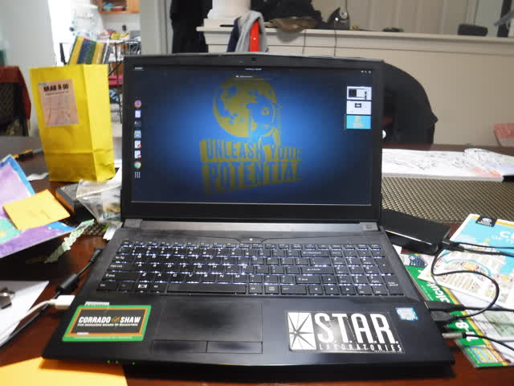
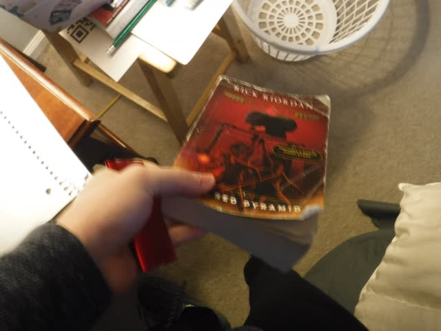

The Objects, Pictured
My new 128 GB "iPod nano"

My computer with the screensaver shown

My Percy Jackson book
The Objects, Explained
- This is my new iPod Nano. Well, technically it isn't an iPod Nano, but rather a virtual version that plays music. Even though MP3 players aren't super popular anymore, I still have use for them because I don't want to use up space on my phone to hold the files. It most closely resembles the 4th generation iPod Nano. Also, it has a lot more storage capacity than the original version
- This is my personal computer. It is technically a laptop, but it usually functions more like a desktop. I am using it to work on my assignments right now.
- This is my favorite book series, Percy Jackson. I haven't had the time or driving desire to really read it in depth, but I want to show that it exists because I like to read and write even though I don't always like to read what I have to read in English class.